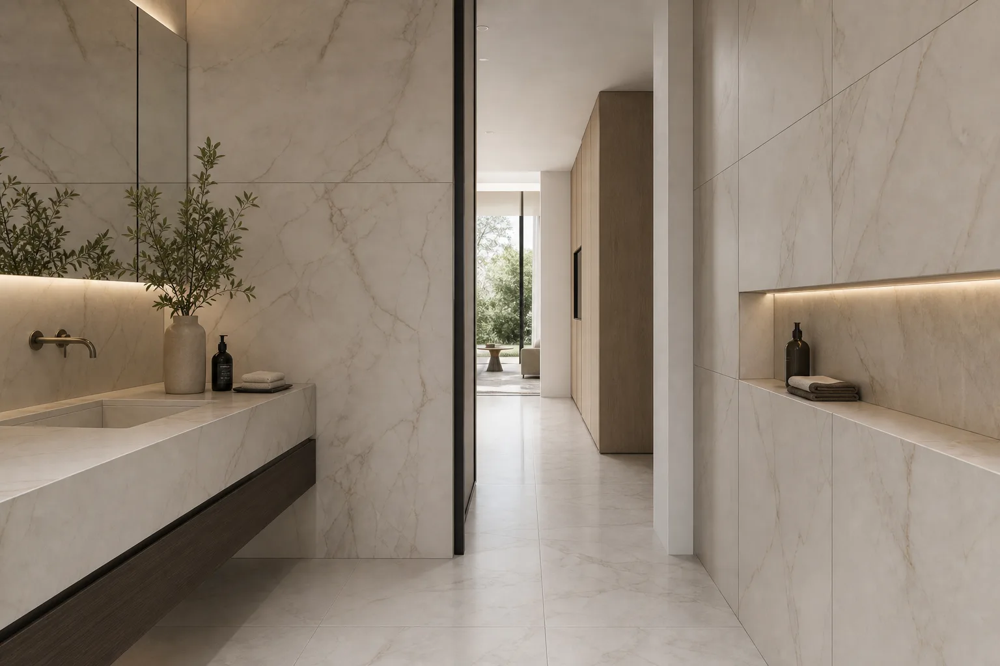
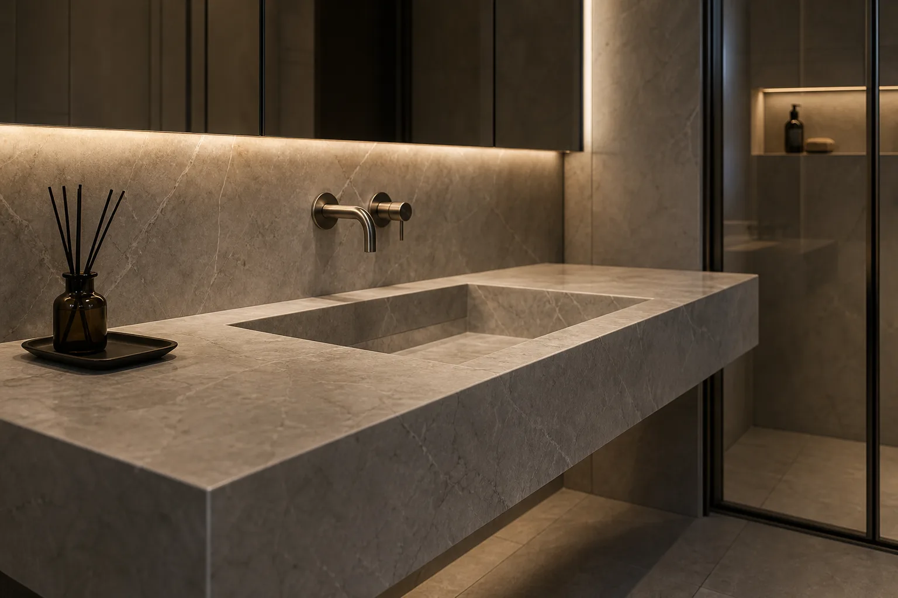
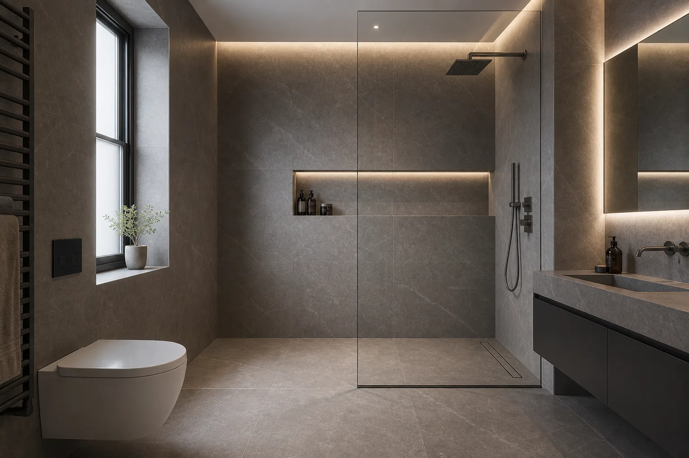
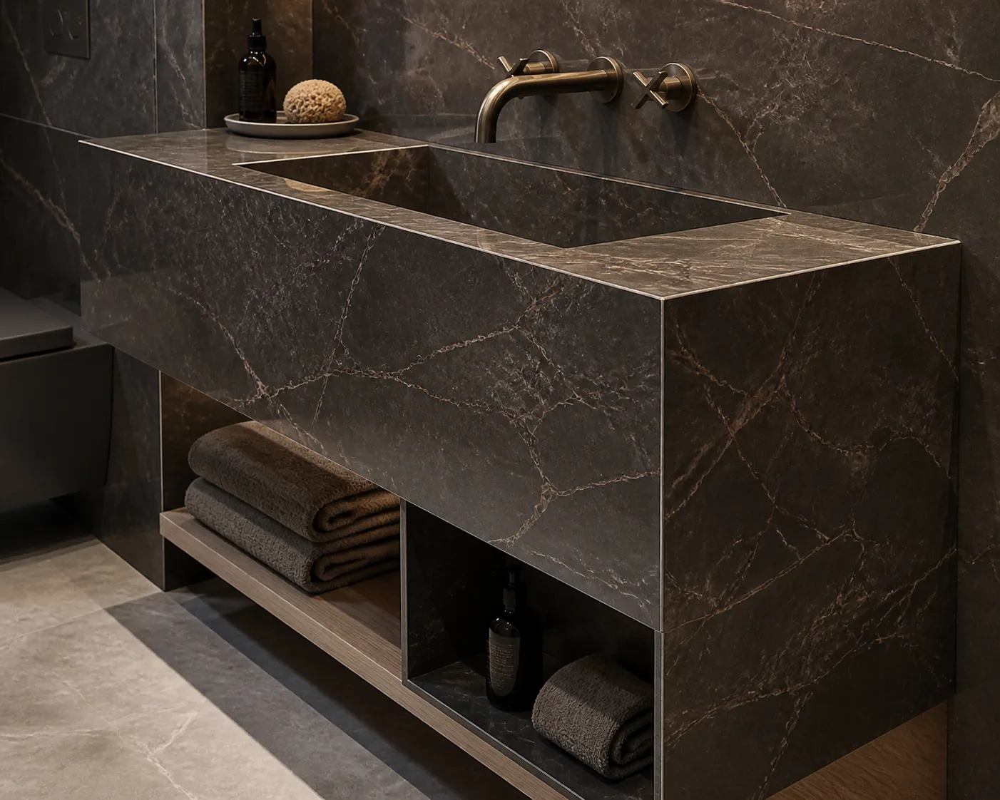
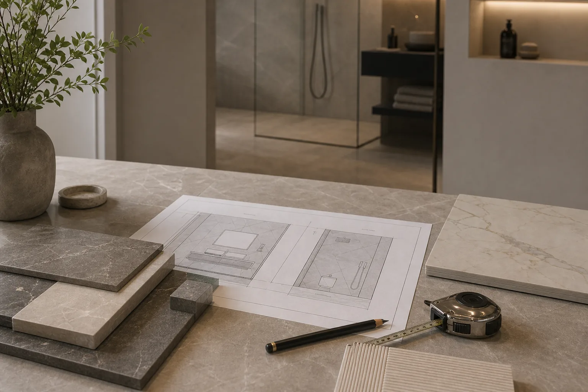

Do you work on full bathroom surface projects?
Yes. We can work across porcelain bathroom surfaces, including shower walls, floors, vanity areas, splashbacks and wet room details.

Services
Artiling Studio provides bespoke porcelain sinks, large-format tiling, wet rooms, bathroom tiling and custom porcelain surfaces in London, with each service shaped around proportion, finish and precise installation detail.


Made to measure porcelain sinks for bathrooms, vanity areas and refined interiors.
View servicePremium porcelain tile installation for bathrooms, floors, feature walls and architectural surfaces.
View serviceBathroom and wet room surfaces planned around layout, waterproofing, alignment and daily use.
View service
Custom mitred porcelain sinks, vanity tops and large-format fabrication details.
View service
Large-format porcelain surfaces for seamless-looking bathrooms, wet rooms and luxury interiors.
View service
Share dimensions, photos and location so we can advise on the right porcelain or tiling route.
Get a Free QuoteSurface-Led Planning
Artiling Studio approaches sinks, vanity areas, walls, wet rooms and bathroom surfaces as connected details rather than separate elements. Porcelain is planned around proportion, alignment, edge detail and the way each surface meets the next.
A project may begin with a bespoke porcelain sink, a large format tiling brief or a wet room, but the finished space works best when each part is considered together: surface finish, tile layout, drainage, storage, brassware and the surrounding architecture.
See our recent tiling and porcelain projects or Request a quote for bespoke tiling and porcelain services in London.
Choosing a Service
Some projects sit clearly within one service, while others combine bespoke sink work, tiling and porcelain bathroom surfaces.
Choose bespoke porcelain sinks for made-to-measure basins, custom vanity units and surface-led sink areas.
Choose large format tiling for walls, floors, feature areas and seamless porcelain finishes with fewer visual breaks.
Choose wet room and bathroom tiling for waterproofed shower areas, drainage planning and refined porcelain bathroom surfaces.
Use this route when a project brings together sinks, vanity surfaces, tiling and porcelain details.
Frequently Asked Questions
Yes. We can work across porcelain bathroom surfaces, including shower walls, floors, vanity areas, splashbacks and wet room details.
Yes. Many projects combine a bespoke porcelain sink with large format tiling, vanity walls or wet room surfaces so the details feel connected.
Yes. Share the room, dimensions, photos and design direction, and we can advise whether the project is best approached as sink work, tiling or a combined surface project.
Selected Work
Explore selected projects or share the first details of a sink, tiling or bathroom surface project.